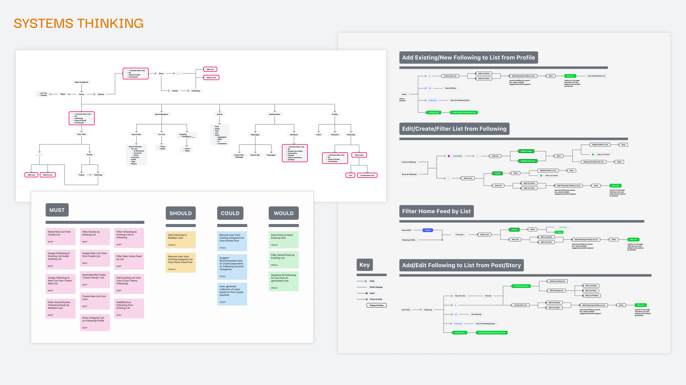
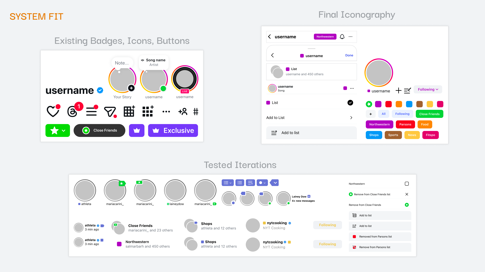
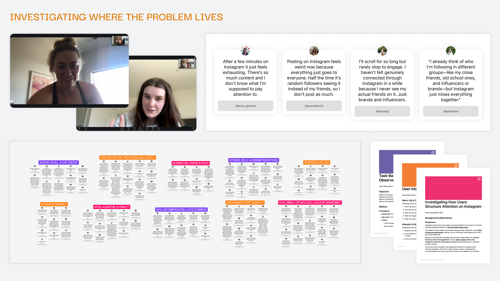
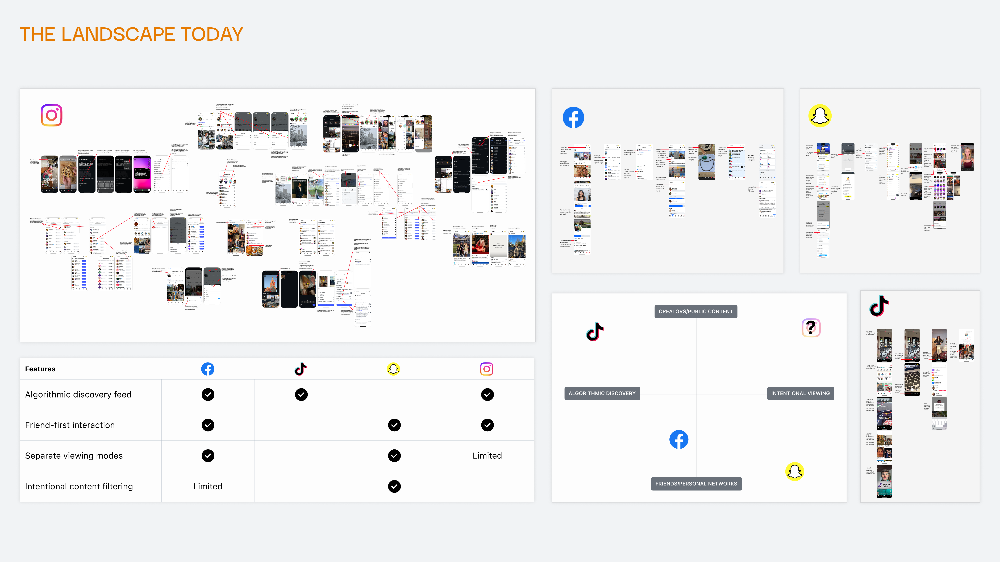
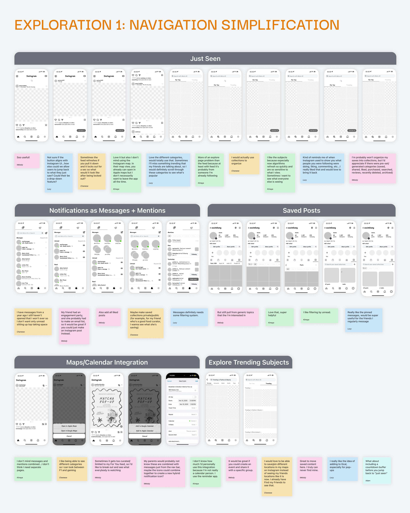
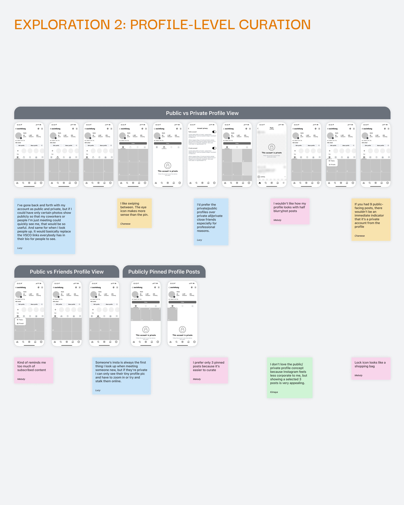
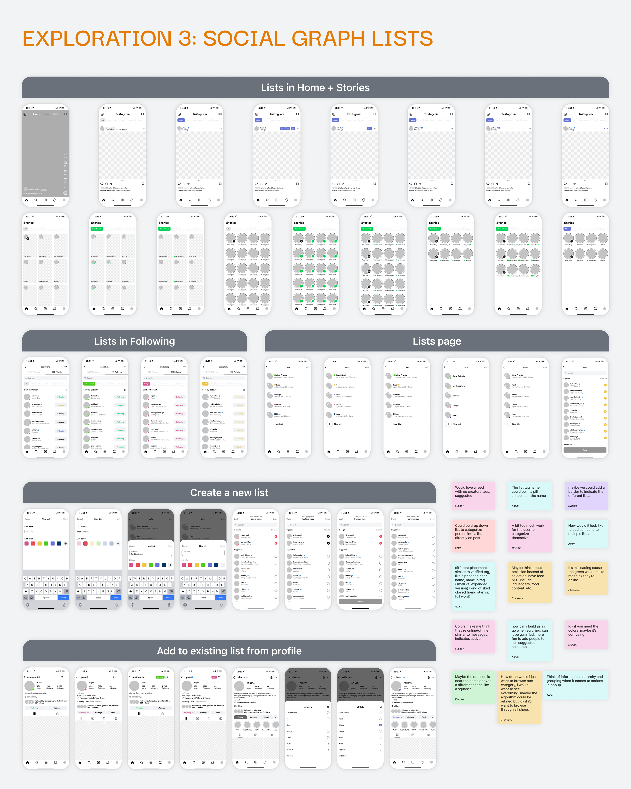

Instagram · Product Design · Concept · 2025
A context layer for Instagram. Lists as the interface to it.
Instagram has no layer between the user and the algorithm. Users can't define who a session is for before ranking begins. Lists is that missing layer.
Problem
Relevance ≠ Priority. Instagram ranks everything. Users can't navigate anything.
Most sessions open with intent: check in on close friends, catch up with school connections, browse a niche interest cluster. But the product offers no mechanism for any of that. There is one feed, and the algorithm decides what appears in it.
Discovery-optimized ranking
The algorithm ranks the full follow graph for engagement. It is well-designed for this. This is not the failure.
A layer for intentional retrieval
Users hold mental categories for who they follow. The product has no way to act on them. This is the gap.
"The algorithm doesn't need to change. What's missing is a layer that lets users define the pool before ranking begins."
Problem framing, Week 2This is a relationship structure problem, not a content quality problem. Instagram already has the follow graph. It has no interface for the user to act on the categories they've built inside it.
Solution
Users define context. Instagram ranks within it.
Lists introduces a context layer between the user and the algorithm. Users organize follows into named groups. Those groups become persistent feed modes. The algorithm still ranks—but only within the selected pool.

Before
One undifferentiated stream
Algorithm ranks everything. User has no upstream input. Session intent is invisible to the system.
The shift
User sets context first
User selects a list. The pool is scoped. The algorithm ranks within that subset.
After
Intentional, revisitable feed modes
Users can navigate to specific relationships without losing broad discovery. "All" is always one tap away.
Lists doesn't filter the algorithm. It changes what the algorithm has to work with. That's a different category of solution.
Core Flows
Four flows. One proves immediate value. Three prove the system holds.
The feature succeeds only if it stays in the path of everyday use. These flows cover the full lifecycle: browsing with defaults, switching contexts, creating lists, and ambient maintenance.
Default lists — immediate value, zero setup
All, Following, and Close Friends ship as system defaults. A user who never builds a custom list still gets context-switching from day one. This handles cold start and removes the setup-before-value problem.
Switching contexts — one tap, persistent state
Custom lists appear in the same chip rail as defaults. Switching is a single tap. State persists between sessions—this is a navigation behavior, not a filter.
Create — three steps, no navigation required
Name, color, members. Creation can be triggered from Home or the lists screen. Either path reaches the same bottom sheet. The friction ceiling is low by design.
Ambient maintenance — assign accounts where you already are
Categorization happens in context: long-press a post, visit a profile, tap into Stories. Assignment surfaces from all three entry points. Users never need to navigate to a management screen to keep lists current.
System Thinking
One context state. Every feed surface responds to it.
The value of Lists is not any individual screen. It's that one piece of user input—a chosen list—propagates across the entire product without the user needing to repeat themselves. That's what makes it a system change, not a feature addition.
Context and ranking are separate concerns
User-controlled
Context layer
Who is this session for? The user defines the pool. Lists is the interface for that input. It is explicit, persistent, and adjustable at any time.
System-controlled
Ranking layer
What appears first? The algorithm ranks within the selected pool. Engagement signals, recency, and relationship strength all still apply—but only inside the context the user set.
The ranking model doesn't change. The input space it operates on does. Separating these concerns is what keeps discovery intact while enabling intentional navigation.
Cross-surface integration
Lists state is global. The same selection applies across every surface that touches the social graph. This is not achieved through per-surface logic—it's achieved by treating Lists as shared state at the data layer.
| Surface | Before Lists | With Lists active |
|---|---|---|
| Home feed | Full follow graph, ranked by algorithm | Scoped to selected list, ranked within that pool |
| Stories tray | All accounts with recent Stories | Only Stories from accounts in the active list |
| Following feed | Chronological, all accounts | Chronological, filtered to active list |
| Account management | Flat list of all follows | Grouped and filterable by list membership |
How Lists changes user behavior at the system level
The current model asks users to scroll until they find what they came for. Lists inverts this: users declare intent first, then browse. That shift—from passive to intentional—changes the quality of every interaction downstream.
System fit: extending, not replacing

Builds on Close Friends
"Lists" extends an existing mental model—a named group of accounts. No new concept to introduce.
No new interaction patterns
Multi-select chips, bottom sheets, long-press menus. Lists uses Instagram's existing interaction primitives throughout.
Secondary to creation
Lists stays visually subordinate to the create button. Context-switching is a navigation behavior, not a primary action.
Scalable naming
User-named lists. No system-assigned categories that fail to match how users actually think about their relationships.
Research & Insights
The categories are mental. The product can't see them.
Five user interviews, a competitive audit across Instagram, BeReal, and Twitter/X, and think-aloud observation. Research goal: locate the problem precisely—navigation, privacy, or something structural in the social graph.

Users hold mental categories, but can't act on them. Every person interviewed had named groups—close friends, school, niche interests. The categorization is real. The product has no interface for it.
The problem is retrieval, not volume. Users don't want less content. They want to reach specific people when they open the app. Reducing noise is a secondary concern.
Audience collapse suppresses posting. Users post less when they can't control who sees it. This weakens the close-friends signal that would make retrieval valuable—a compounding problem.
Nobody asked for a smarter algorithm. Zero interviews surfaced a desire for better recommendations. The ask, consistently: choose who a session is for before it starts.
"I already think of who I'm following in different groups—close friends, old school ones, influencers—but Instagram just mixes everything together." @laineydow
"Posting feels weird now because everything goes to everyone. Half the time random followers see it instead of my friends, so I don't post as much." @gracekeirn12

Explorations
Three directions. One changed the system's logic. Two didn't.
Each direction addressed a real friction. The test was whether a direction changed the system's unit of prioritization—not just the interface around it.

Navigation simplification
Surfaced existing controls more clearly. Made the app easier to navigate. But users were still inside one mixed feed—just with better pathways into it.
Why it failed: Navigation improves access. It doesn't define who a session is for. The input problem remains unsolved.

Profile-level curation
More control over who sees content and how the profile appears. Addressed audience collapse from the posting side.
Why it failed: Identity controls improve self-expression. They don't help users navigate toward the relationships they came to see. Different problem.

Social graph organization
Grouping follows into named lists matched the mental models users already held. Those lists could then act as a context layer before ranking begins—changing the pool, not just the presentation.
Why it won: It was the only direction that changed what the algorithm receives as input. Every other direction worked around the problem. This one addressed the structure.
Design Decisions
Every decision made to keep Lists in the path of everyday use.
The biggest risk for a feature like this: setup once, forget forever. A list created and never returned to is a failed feature. The decisions below are all oriented toward habitual, low-friction use.
| Decision | Rationale | Tradeoff accepted |
|---|---|---|
| Chip rail in Home | Lists must be visible every session—not buried in settings where they're created once and ignored. | Rail takes vertical space. Pinned + recent lists only; too many visible options creates overhead, not flexibility. |
| Default lists ship pre-built | Solves cold start. Users get immediate value on day one without any setup. | Defaults may not match every user's mental model. Names are generic by design—they work before any customization. |
| Context state is persistent | A filter that resets on next open is not a navigation behavior—it's a filter. Persistence makes it a mode. | Users who don't consciously switch may get a narrower feed unexpectedly. "All" is always accessible as a recovery path. |
| Ambient assignment entry points | Maintenance has to happen in the flow of normal use. If categorization requires navigating to a management screen, it won't happen. | Adds a surface to post long-press and profile menus. Must not compete with primary actions like share or follow. |
| Discovery preserved in every context | Recommendations persist inside any active list. Over-filtering is a real risk—serendipity has to survive within each mode. | Reduces algorithm's full data set per session. Accept this to avoid an isolation failure mode that would erode trust in the feature. |
| MVP: default lists first, private only | Ship defaults and integration across Feed, Stories, and Following before expanding to collaborative or shared lists. | Defers social list-sharing feature. Reduces scope risk and keeps the first rollout comprehensible to users. |
Impact
Success isn't creation rate. It's whether users come back.
This concept was not shipped. The most credible signal of success isn't list creation—that measures onboarding. The signal that matters is repeat use over time: whether Lists becomes a navigation behavior or a novelty that decays.
Weekly context switching rate
Users who move between lists regularly have made it a navigation behavior—not a one-time setup.
Interactions per session in list mode
Does scoping to a context produce stronger engagement? Higher signal-to-noise should show up here.
List creation completion rate
High drop-off indicates the setup cost outweighs the perceived value at first use.
Discovery engagement in list mode
Lists must not reduce broad discovery. If recommendation engagement collapses, the tradeoff has gone too far.
Validated by research
Users hold real mental categories and want to act on them. The problem is structural, not perceptual. These findings are consistent across all five interviews.
Still assumed
Whether lists are maintained over time without decay. Whether context-scoped browsing improves relationship health without suppressing discovery. Both require behavioral data at scale to verify.
Reflection
What changed in how I think.
The architecture is the problem, not the algorithm.
I started assuming the feed algorithm was the root cause. It isn't. Ranking works well for discovery. What Instagram lacks is a structural layer for intentional navigation—a way to act on the social graph already built. That reframe changed where the solution had to live.
Design at the system level, not the screen level.
The hardest part wasn't designing a feed filter—it was asking what the product's unit of prioritization should be and how changing that unit would ripple across every surface that touches the social graph. The screen-level work followed from that answer.
The next version proposes structure; it doesn't require users to build it.
Manual list creation works as a foundation, but the stronger version uses follow behavior, mutual connections, and interaction patterns to suggest lists automatically. Reducing the initial setup burden is the highest-leverage improvement available.
Some questions can only be answered with a live rollout.
Open questions remain: how users with multi-context accounts manage list overlap, how creator reach holds under heavy filtering, and whether list maintenance decays once initial setup energy fades. None of those questions can be answered without behavioral data at scale.